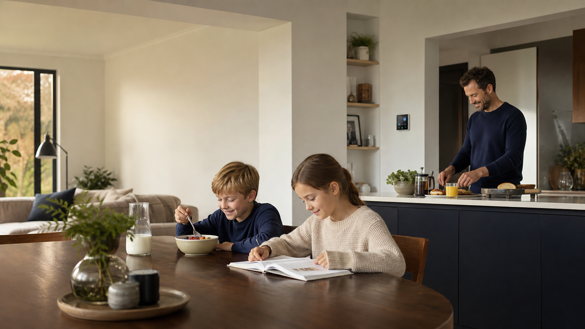

Family rhythm
A home that helps everyone keep pace.
Shared routines, voice requests, messages, connected devices and household context work together without pretending every moment needs an automation.
NuaHome

A more present home
The practical intelligence that helps a family stay close to what matters: the rhythm of the home, children's learning, everyday care and the small things that should not fall through the cracks.
Designed around real people, not a surveillance dashboard.
Home, held together
NuaHome can bring together approved household devices, room context, family routines, messages and personal support. It stays helpful by being specific about what is connected, who can see it and what is switched on.
A day with NuaHome
Bring together family routines, school reminders and a meal idea based on the preferences you choose to keep. A parent stays in charge of every suggestion.
With Lumi connected, a child can move from a home reminder into a focused learning session. Family members choose the goals, timing and encouragement style.
Use the rooms, devices and sharing permissions you approve to coordinate the evening: a message to a room, a home-control request, or simply a better sense of what still needs doing.
Check-ins and safety routines can be tailored for a household, an older relative or a person with additional needs. Urgent help is always a human and emergency-services decision.
Family rhythm
Shared routines, voice requests, messages, connected devices and household context work together without pretending every moment needs an automation.
Children and learning
Build reading, homework, movement and screen-time routines with clear parent controls. Lumi learning can be connected deliberately, keeping learning goals and family context understandable.
Set up a learning rhythmFood and wellbeing
Keep meal preferences, household plans and shopping intentions in one place. Nutrition guidance is practical support, never medical advice, and remains editable by the household.
Care that stays human
NuaHome gives a household a shared, permission-led picture of the things they decide matter: check-ins, connected safety devices, room messages and care routines. It can help surface what needs attention, but it does not diagnose, replace a carer or make emergency decisions on its own.
Explore care settingsAfter sign-in, each person sees only the households, rooms, messages and controls they have been invited to use. Household owners can manage membership, sharing and access from the portal.
Go to the NuaHome portalPrivate by design
Access belongs to a named person, home and purpose. It can be changed or removed.
Camera, location, microphone and sharing features are not silently enabled just because a phone is linked.
Connected home devices and sensitive room signals remain subject to the household's local setup and chosen retention settings.